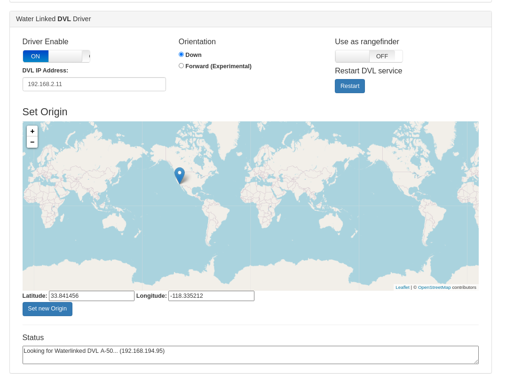

DVL integration (BETA)
The DVL integration with ArduSub is in a BETA stage and is currently unsupported for normal use. This document is provided to instruct beta testers and developers how to test the BETA stage integration. There is no guarantee that the DVL integration will work for any particular application.
Supported DVLs
The Waterlinked A50 DVL is the only supported DVL at the moment in the beta integration.
A50 DVL configuration
The DVL must be configured with a static IP address of 192.168.2.95. Follow Water Linked's instructions here.
Companion Software
A beta version of the companion software is required to use the DVL integration.
Installing beta companion software
Follow these steps to get the Experimental Companion version with the DVL driver:
- Start from companion 0.0.23
- Make sure the ROV is connected to the internet
- Navigate to http://192.168.2.2:2770/git
- Click "origin" -> "branches" -> "dvl"
- Click "update"
- Wait until the update is over and the companion reboots
- Refresh the page and "Water Linked" should show up in the navbar
DVL configuration in Companion
The DVL driver introduces a new interface to the http://192.168.2.2:2770/waterlinked page.

Driver Enable:
Enables or disables the DVL Driver
DVL IP Adress:
Inital IP where the driver will try to find the DVL. The driver always attempts to find Waterlinked-dvl.local (mDNS hostname) in the local network, if that fails, it falls back to the IP address in this field.
Orientation:
Orientation of the DVL: Down is the suggested use, where the DVL points to the ocean floor, Forward is an untested mode where the dvl is mounted forward to lock position to a vertical surface in front of it.
Use as Rangefinder:
Allows the DVL to be used as a rangefinder (shown in QGC).
Restart DVL Service:
Restarts the DVL service.
Set New Origin:
Used for dead reckoning; this makes the ROV show up in QGC at the selected location. The position displayed in QGC is calculated by the autopilot independently of the position showed in the Water Linked DVL web interface, which is calculated by the DVL itself.
Status:
Shows the current Driver status, useful for troubleshooting.
ArduSub Firmware
The DVL data is sent by the VISUAL_ODOMETRY mavlink message. This message is supported in ArduSub 4.1-beta and onward. The ArduSub 4.1-beta firmware is recommended for testing with DVL.
Installing the ArduSub beta firmware
Click beta under the update pixhawk section in the System Page.
PIDs and Other Important Parameters
These parameters must be configured to the recommended values for DVL integration to perform correctly:
Use mavlink2:
SERIAL0_PROTOCOL 2
Use EKF3 for the odometry support
EK3_ENABLE 1
AHRS_EKF_TYPE 3
EK2_ENABLE 0
Enable odometry support
VISO_TYPE 1
Disable external gps in ekf3
EK3_GPS_TYPE 3
Suggested gains
PSC_POSXY_P 2.5
PSC_POSZ_P 1.0
PSC_VELXY_D 0.8
PSC_VELXY_I 0.5
PSC_VELXY_P 5.0
PSC_VELZ_P 5.0
Operation
Position Hold
After setup, reboot the ROV. The Status field in the Waterlinked page should read Running.... The QGC will announce "EKF3 IMU0 STARTED RELATIVE AIDING" and then "EKF3 IMU0 FUSING ODOMETRY". This means the DVL input is being fused and you can switch to POSHOLD mode to use it.
Tracking on map
To track the ROV position in the QGC map view, go to the Waterlinked page, place the pin in the starting position, and click "Set New Origin".